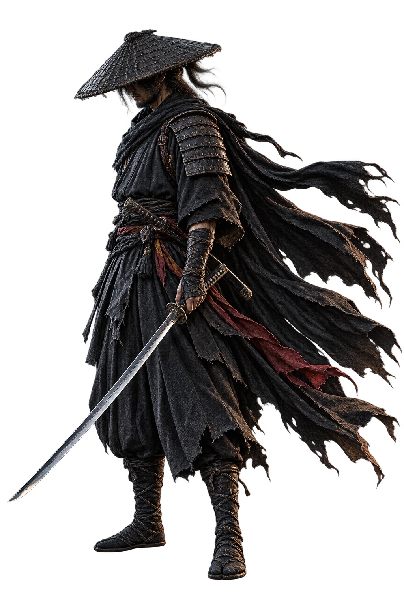

Faith over Fear
Разработанный на заказ сайт бренда христианской одежды: каталог, карточки товаров, корзина, оформление заказа и управление содержимым магазина.
Next.jsReactTypeScript
АРХИВ / 13 ПРОЕКТОВ
Визуальные сайты, прикладные продукты
и авторские эксперименты.
У каждой работы — своя задача.
Внутри — идея, устройство и детали.
Разработанный на заказ сайт бренда христианской одежды: каталог, карточки товаров, корзина, оформление заказа и управление содержимым магазина.
Сервис записи к частным мастерам и преподавателям: расписание, услуги, клиенты и уведомления в одном процессе.
Кулинарный проект в двух версиях: облачный AI-шеф L’atelier и офлайн-приложение Pocket Chef, которое собирает рецепты из домашних продуктов.

A CINEMATIC SCROLL FILMLAST WINDИнтерактивный скролл-фильм: один странник, лунное поле и четыре непрерывные композиции, которыми управляет прокрутка.
Telegram-бот читает каналы с заказами, оценивает релевантность через LLM и готовит черновики откликов.
Мини-приложение, которое превращает аудиозаписи лекций в конспекты и собирает учебные материалы в тетради по предметам.
 IN MOTIONRUSJET
IN MOTIONRUSJETКинематографический сайт об авиации: реальная видеосъёмка, выразительная типографика и переходы, связанные с прокруткой.
Браузерная 3D-история и эксперимент с персональным подарком: знакомые места, голоса и памятные детали становятся частью игрового мира.
Цифровая экспедиция по трём вымышленным планетам: вращение, масштаб, процедурный ландшафт, атмосфера и спокойный синтезированный звук.
 1838 — 2026СОЧИ
1838 — 2026СОЧИДокументальный маршрут по Сочи: двенадцать глав, архивные фотографии, карты и сопоставления «тогда и сейчас».
Многопользовательское шоу для дня рождения: общий экран на телевизоре, ответы с телефонов и отдельный пульт ведущего.
Учебный эксперимент НИУ ВШЭ по эффекту нулевой цены: два ценовых условия и один выбор между сладостями.
Семидневный тренажёр английского: грамматика, устойчивые сочетания, разговорная практика и повторение сложных тем уровня B2.
Обложки приложений — графические иллюстрации их идеи. Это не снимки реальных экранов.
ЧЕЛОВЕК ЗА ПРОЕКТАМИ